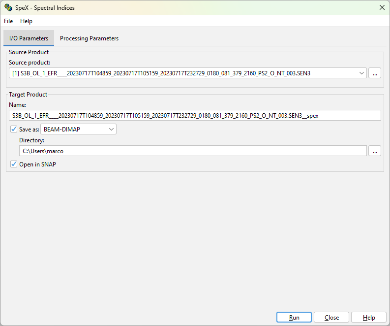
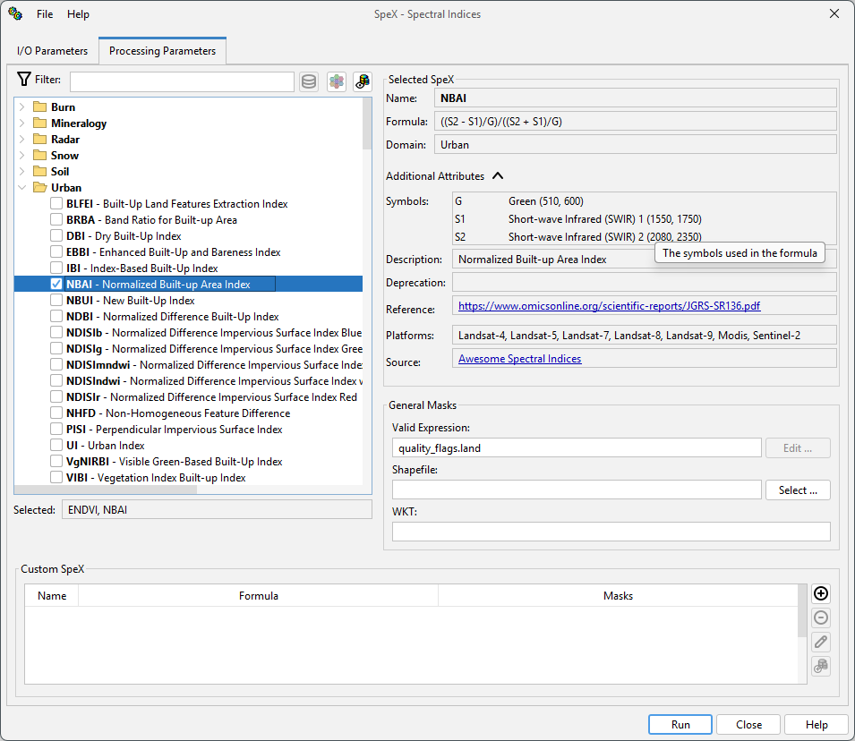
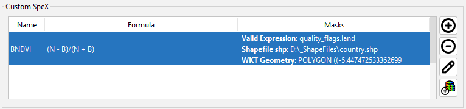
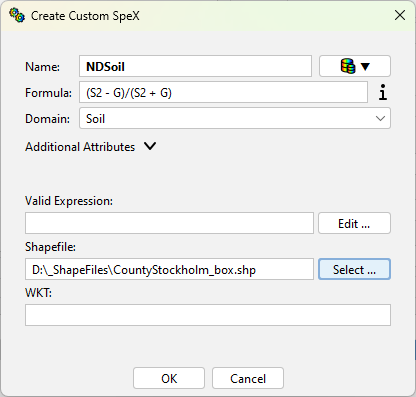
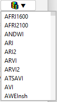
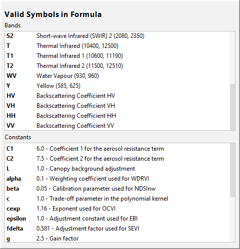

|
|
EOMasters Toolbox | |
 SpeX Processor - Graphical User Interface
SpeX Processor - Graphical User InterfaceThe SpeX Processor allows to compute multiple spectral indices with general masks (expression/WKT/shapefile) at once.
In addition, it is possible to specify masks for each selected spectral index. The SpeX Processor can be accessed via
the menu Optical / SpeX / SpeX Processor. The following dialog is shown:
The SpeX Processor consists of two tabs. The first tab I/O Parameters allows to specify the input and
output parameters. The second tab Processing Parameters allows to specify the parameters for the
processing.

The I/O Parameters tab allows to specify the input and output parameters.
This defines the source product on which the spectral index processing is performed. Either select one of the products already opened in the application or select a new one by opening a product selection dialog.
If a source product has bands of different sizes, e.g. Sentinel-2 products, they are resampled to the highest resolution of the product. This is done by using the SNAP Resample operation with the default parameters. If a different resampling is required the source product should be resampled first.
Name - Used to specify the name of the target product. By default, it is set to the name of the source product with the suffix '_spex' appended.
Save as - Used to specify whether the target product should be saved to the file system. The dropdown list provides a list of available file formats. The text field shows the path to the directory where the processing result will be saved. You can edit the text field directly or select a directory via the '...' button.
Open in SNAP - Used to specify whether the target product should be opened in SNAP. If the target product is not saved, it is opened in SNAP automatically.

The Processing Parameters tab allows to specify the parameters for the processing.On the left side all
available spectral indices are listed in a tree view. On the right side the details of the currently selected index
are shown. And beneath masks can be specified which are applied to all selected indices. The SpeX Database Manager can be opened by clicking on the button. It allows to add custom indices to the database.
The tree view can be filtered by entering text into the filter field at the top. The list of indices will be reduced to those indices which contain the text in the name, the description, the domain, the formula or the platforms. Capitalisation is ignored for the filtering. Beside the filter field you can toggle how the indices are grouped. You can click on the barrel symbol to filter the list of indices so that it only shows indices compatible with the currently selected source product. Beside the filter field you can toggle how the indices are grouped.
| Grouping | Icon | Description |
|---|---|---|
| Domain | The indices are grouped by their domain (Default). | |
| Name | The indices are grouped alphabetically by the first letter of their name. | |
| Source | The indices are grouped by their source where they have been taken from. | |
| None | The indices are not grouped at all. Only sorted by name. |
General masks can be specified by expression, WKT or shapefile. The masks are applied to all selected indices.
Valid Expression - This expression defines which pixels are valid for processing. It must follow the rules of Band Maths. If a source product is selected an edit dialog can be opened to ease the writing of the expression.
Shapefile - A shapefile can be selected to define the valid region for the processing.
WKT - A geometry using WGS84 coordinates can be specified following the .
Custom SpeX can be defined in the lower area of the Processing Parameters tab. Custom Spex can override the values of predefined spectral indices and each can have its own set of masks.

The table shows the most important information of th custom spectral indices defined. Further information is shown in the tool tip when hovering over the row of the spectral index. The four buttons on the right side can be used to modify the list of custom spectral indices.
| Button | Description |
|---|---|
| This button allows to add a new custom spectral index to the database. | |
| This button removes the currently selected spectral index. | |
| This button allows to edit the selected custom spectral index. | |
| With this button the currently selected index can be added to the SpeX Database. Before adding it to the database the attributes are shown for verification and can be modified if necessary. The masks associated with the index are not added to the database. |
The add/edit dialog is similar allows to edit the attributes of the spectral index and also the masks which shall be used.

You can use the button next to the name field to select an existing spectral index and prefill all fields.  |
In order to write the formula you can hover over the next to the Formula field. It will show a panel with the usable symbols.  |
The general masks apply to all indices, either specified in the spexList or one of the custom indices. When
multiple masks are specified, they are combined using the logical AND operator. This means that a pixel is only
valid if it is valid for all masks. For example, if the general validExpression mask is set to
flags.LAND and the shapefile mask of an index ist set to cover a city, only the land pixels covered by
this city shape are processed. The invalid pixels of bands used in the formulas, defined by the bands no-data value
and valid expression, are not considered by default.